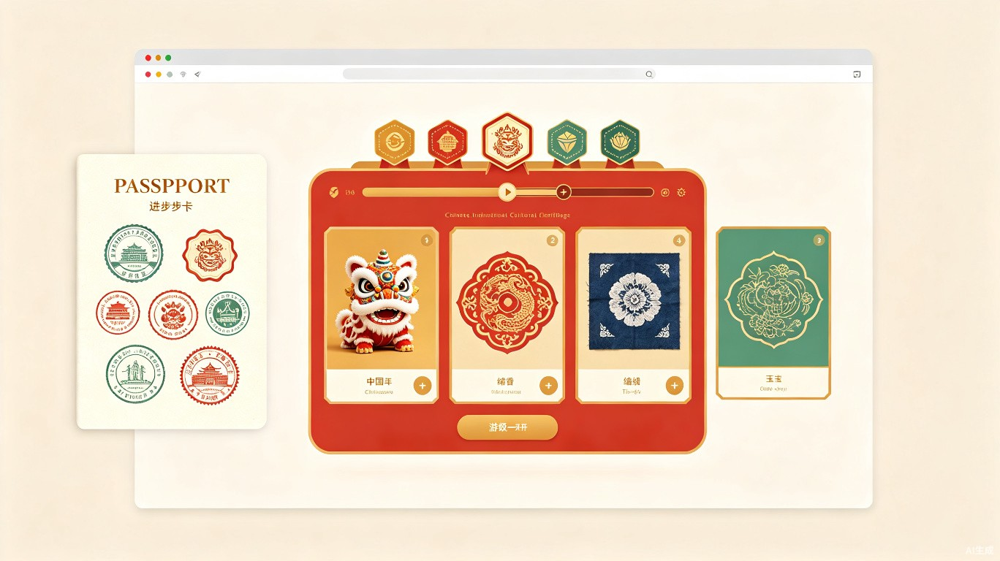

一、创意名称与介绍
岭南非遗AI通关护照，旨在解决当下中小学生非遗研学存在的一次性体验、记忆留存弱、缺乏持续参与动力的行业痛点。多数学生参与广彩、醒狮、扎染、掐丝珐琅等岭南非遗研学活动后，体验结束便无后续沉淀，难以形成长效学习成果。
本项目灵感源自日常校园非遗研学实践，针对研学活动"走过、看过、忘过"的普遍问题打造。产品整体为轻量化网页学习平台，以游戏化闯关模式为核心，依托AI技术实现非遗作品智能核验、积分勋章解锁、个人成长档案生成，让非遗学习可记录、可积累、可沉淀。
二、目标用户及痛点
核心用户群体
中小学学生
参与校内外非遗研学活动的主力群体
学校老师
负责非遗美育教学与研学课程管理
研学机构从业者
组织非遗研学活动的机构运营方
使用场景
核心痛点
体验一次性，无后续跟踪
传统非遗研学仅停留在单次体验层面，无后续学习跟踪与成果记录，学生体验后遗忘率高。
参与积极性参差不齐
学生缺乏持续探索非遗文化的动力，研学活动吸引力不足，参与意愿逐步衰减。
成果难以系统化留存
研学成果无法系统化留存，学生缺少可用于综合素质评价、评优展示的官方成长素材。
非遗学习价值难落地
学习成果与学校综合素质评价体系脱节，非遗学习的教育价值难以得到官方认可和体现。
三、产品功能架构
用户使用流程
选择非遗项目
浏览广彩、醒狮、扎染、掐丝珐琅等岭南非遗项目列表
参与研学体验
线下/线上完成非遗项目体验，制作非遗作品
AI作品核验
上传作品照片，AI智能评分并生成评价反馈
解锁勋章积分
通过核验即可获得积分、徽章与通关印章
生成成长档案
系统自动汇总研学历程，一键生成标准化成长档案
核心功能模块
游戏化闯关
非遗项目以关卡形式呈现，逐级解锁，激发持续学习动力
AI智能核验
上传作品即可获得AI自动评分与个性化反馈建议
勋章徽章系统
完成任务解锁限定徽章，构建个人非遗成就墙
成长档案
自动生成标准化研学档案，可用于综合素质评价
通关护照
数字化非遗护照，记录每一次通关打卡的文化旅程
排行榜
区域/校级排行榜，激发良性竞争与同伴学习氛围
四、产品界面展示

与传统非遗研学模式对比
| 维度 | 传统研学模式 | 岭南非遗AI通关护照 |
|---|---|---|
| 体验持续性 | 单次体验，无后续 | 闯关模式，持续激励 |
| 成果记录 | 纸质照片/无记录 | 数字化护照+成长档案 |
| 作品评价 | 人工评价，标准不一 | AI智能核验，标准化评分 |
| 学习动力 | 被动参与，兴趣衰减 | 积分勋章+排行榜驱动 |
| 成果应用 | 无标准化素材 | 一键生成综合素质档案 |
| 文化传承 | 浅层接触，记忆短暂 | 深度学习，长效留存 |
五、价值与意义
从碎片体验到系统成长
将碎片化的非遗单次体验转化为系统化、可持续的成长过程。通过AI打分、勋章解锁、档案生成的闭环机制，激发学生自主学习非遗文化的积极性，同时一键生成标准化研学成果档案，省去学生整理素材、老师统计成果的繁琐流程，大幅提升美育研学工作效率。
以年轻化方式传承非遗
创新非遗文化传播与美育教学模式，打通校园研学与日常兴趣学习的壁垒，让岭南非遗文化以年轻化、趣味化的形式扎根青少年群体，有效助力非遗文化传承与普及，助力中小学美育素质教育落地，具备极强的推广价值与社会意义。
六、创意产物说明
创意产物已完成
已通过 TRAE Work Auto 模式生成完整创意方案 HTML 产物，完整展示平台核心功能、游戏化闯关机制、AI识别逻辑、用户使用流程与非遗档案展示效果，全方位可视化呈现项目创意亮点与落地价值，可直接上传用于作品核验与创意展示。